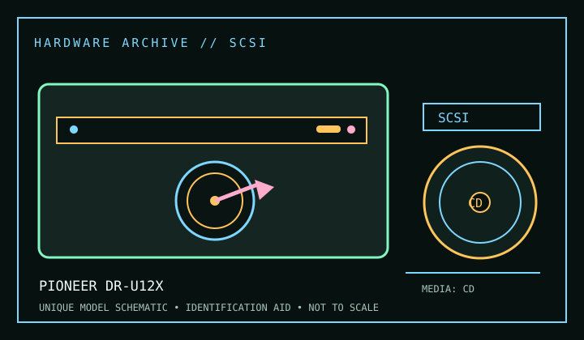

[ CD-ROM READERS // IDENTIFIED MODEL ]
Pioneer DR-U12X
CD-ROM and CD-DA read. Ratings below are model-specific; suffix, firmware and media can change compatibility.

IDENTIFICATION: Compare full model, suffix, OEM part number and firmware with the cited manual before installing, servicing, or using the drive for preservation reads.
Documented specifications
| Catalog subcategory | CD-ROM readers |
|---|---|
| Exact model | Pioneer DR-U12X |
| Read/write formats | CD-ROM and CD-DA read |
| Rated speeds | 12× maximum. Maximums are media- and mode-dependent; sustained rate is not guaranteed. |
| Interface / mechanics | Internal 5.25-inch SCSI-2. Consult the named service/product manual for mounting drawings; dimensions are not repeated where the cited model literature does not establish them. |
| Host / software compatibility | Requires a SCSI host adapter and correctly terminated chain; legacy BIOS/driver support is host-dependent. |
| Model distinctions | Record full DR-U12X model and firmware; do not infer bus type from later Pioneer drives. |
Use, compatibility & preservation
- Requires a SCSI host adapter and correctly terminated chain; legacy BIOS/driver support is host-dependent.
- Record full DR-U12X model and firmware; do not infer bus type from later Pioneer drives.
- For imaging, record exact drive/firmware, interface controller, host OS, application version, disc format and any read or verification errors; retain checksummed image copies and logs.
- Handle discs by edge or center hole; keep them in cases in a cool, dry location away from direct sunlight. Avoid adhesive labels, abrasives and undocumented polishing/solvents.
Read support is not write support. Verify the full unit label against the manual and measure the actual bay/caddy when a fit drawing is not available.
Sources
- Pioneer Pioneer DR-U12X product manual / specificationsManufacturer support/product documentation locator for the exact named model. Match manual revision and product suffix to the label before applying a specification.
- Ecma-130 — Data interchange on read-only 120 mm optical data disksApplicable format/standards reference; it describes the disc format, not a guarantee that every drive revision implements it.
- Library of Congress — CD-R and DVD-R/RW longevityPreservation guidance for recordable optical media, not drive product specifications.